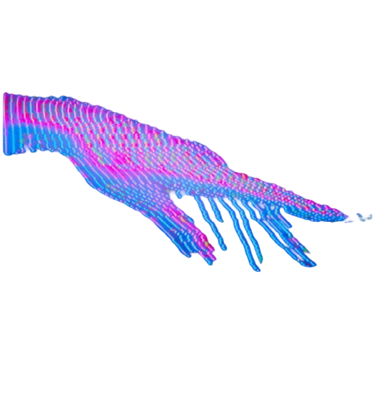

Toekomst van het web
In deze website lees je mijn perspectief van de rol van AI binnen de toekomst van het web. Ik heb een blogtekst, encyclopedie tekst en bronnen pagina gemaakt.


In deze website lees je mijn perspectief van de rol van AI binnen de toekomst van het web. Ik heb een blogtekst, encyclopedie tekst en bronnen pagina gemaakt.